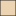
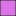

<!doctype html>
<html lang="en">
    <head>
        <meta charset="utf-8">
        <meta http-equiv="X-UA-Compatible" content="IE=edge">
        <meta name="viewport" content="initial-scale=1,user-scalable=no,maximum-scale=1,width=device-width">
        <meta name="mobile-web-app-capable" content="yes">
        <meta name="apple-mobile-web-app-capable" content="yes">
        <link rel="stylesheet" href="css/leaflet.css"><link rel="stylesheet" href="css/L.Control.Locate.min.css">
        <link rel="stylesheet" href="css/qgis2web.css"><link rel="stylesheet" href="css/fontawesome-all.min.css">
        <link rel="stylesheet" href="css/leaflet-control-geocoder.Geocoder.css">
        <link rel="stylesheet" href="css/leaflet-measure.css">
        <style>
        #map {
            width: 1572px;
            height: 774px;
        }
        </style>
        <title></title>
    </head>
    <body>
        <div id="map">
        </div>
        <script src="js/qgis2web_expressions.js"></script>
        <script src="js/leaflet.js"></script><script src="js/L.Control.Locate.min.js"></script>
        <script src="js/leaflet.rotatedMarker.js"></script>
        <script src="js/leaflet.pattern.js"></script>
        <script src="js/leaflet-hash.js"></script>
        <script src="js/Autolinker.min.js"></script>
        <script src="js/rbush.min.js"></script>
        <script src="js/labelgun.min.js"></script>
        <script src="js/labels.js"></script>
        <script src="js/leaflet-control-geocoder.Geocoder.js"></script>
        <script src="js/leaflet-measure.js"></script>
        <script src="data/ECOSISTEMAS_1.js"></script>
        <script src="data/VIAS_2.js"></script>
        <script src="data/CONSTRUCCIONES_3.js"></script>
        <script>
        var highlightLayer;
        function highlightFeature(e) {
            highlightLayer = e.target;

            if (e.target.feature.geometry.type === 'LineString') {
              highlightLayer.setStyle({
                color: '#ffff00',
              });
            } else {
              highlightLayer.setStyle({
                fillColor: '#ffff00',
                fillOpacity: 1
              });
            }
        }
        var map = L.map('map', {
            zoomControl:true, maxZoom:28, minZoom:1
        }).fitBounds([[5.399054418580385,-73.5941499247785],[6.1272185408627395,-72.12038122432354]]);
        var hash = new L.Hash(map);
        map.attributionControl.setPrefix('<a href="https://github.com/tomchadwin/qgis2web" target="_blank">qgis2web</a> &middot; <a href="https://leafletjs.com" title="A JS library for interactive maps">Leaflet</a> &middot; <a href="https://qgis.org">QGIS</a>');
        var autolinker = new Autolinker({truncate: {length: 30, location: 'smart'}});
        L.control.locate({locateOptions: {maxZoom: 19}}).addTo(map);
        var measureControl = new L.Control.Measure({
            position: 'topleft',
            primaryLengthUnit: 'meters',
            secondaryLengthUnit: 'kilometers',
            primaryAreaUnit: 'sqmeters',
            secondaryAreaUnit: 'hectares'
        });
        measureControl.addTo(map);
        document.getElementsByClassName('leaflet-control-measure-toggle')[0]
        .innerHTML = '';
        document.getElementsByClassName('leaflet-control-measure-toggle')[0]
        .className += ' fas fa-ruler';
        var bounds_group = new L.featureGroup([]);
        function setBounds() {
        }
        map.createPane('pane_MAPABASEESRIGray_0');
        map.getPane('pane_MAPABASEESRIGray_0').style.zIndex = 400;
        var layer_MAPABASEESRIGray_0 = L.tileLayer('http://services.arcgisonline.com/ArcGIS/rest/services/Canvas/World_Light_Gray_Base/MapServer/tile/{z}/{y}/{x}', {
            pane: 'pane_MAPABASEESRIGray_0',
            opacity: 1.0,
            attribution: '',
            minZoom: 1,
            maxZoom: 28,
            minNativeZoom: 0,
            maxNativeZoom: 20
        });
        layer_MAPABASEESRIGray_0;
        map.addLayer(layer_MAPABASEESRIGray_0);
        function pop_ECOSISTEMAS_1(feature, layer) {
            layer.on({
                mouseout: function(e) {
                    for (i in e.target._eventParents) {
                        e.target._eventParents[i].resetStyle(e.target);
                    }
                },
                mouseover: highlightFeature,
            });
            var popupContent = '<table>\
                    <tr>\
                        <th scope="row">ECOSISTEMA</th>\
                        <td>' + (feature.properties['ECOSISTEMA'] !== null ? autolinker.link(feature.properties['ECOSISTEMA'].toLocaleString()) : '') + '</td>\
                    </tr>\
                </table>';
            layer.bindPopup(popupContent, {maxHeight: 400});
        }

        function style_ECOSISTEMAS_1_0(feature) {
            switch(String(feature.properties['ECOSISTEMA'])) {
                case 'Agroecosistemas campesinos mixtos':
                    return {
                pane: 'pane_ECOSISTEMAS_1',
                opacity: 1,
                color: 'rgba(35,35,35,1.0)',
                dashArray: '',
                lineCap: 'butt',
                lineJoin: 'miter',
                weight: 1.0, 
                fill: true,
                fillOpacity: 1,
                fillColor: 'rgba(41,119,221,0.34509803921568627)',
                interactive: true,
            }
                    break;
                case 'Agroecosistemas Lecheros':
                    return {
                pane: 'pane_ECOSISTEMAS_1',
                opacity: 1,
                color: 'rgba(35,35,35,1.0)',
                dashArray: '',
                lineCap: 'butt',
                lineJoin: 'miter',
                weight: 1.0, 
                fill: true,
                fillOpacity: 1,
                fillColor: 'rgba(201,127,30,0.34509803921568627)',
                interactive: true,
            }
                    break;
                case 'Areas rurales intervenidas':
                    return {
                pane: 'pane_ECOSISTEMAS_1',
                opacity: 1,
                color: 'rgba(35,35,35,1.0)',
                dashArray: '',
                lineCap: 'butt',
                lineJoin: 'miter',
                weight: 1.0, 
                fill: true,
                fillOpacity: 1,
                fillColor: 'rgba(182,231,133,1.0)',
                interactive: true,
            }
                    break;
                case 'BMD Andinos y Alto-andinos de Roble':
                    return {
                pane: 'pane_ECOSISTEMAS_1',
                opacity: 1,
                color: 'rgba(35,35,35,1.0)',
                dashArray: '',
                lineCap: 'butt',
                lineJoin: 'miter',
                weight: 1.0, 
                fill: true,
                fillOpacity: 1,
                fillColor: 'rgba(234,75,50,0.5019607843137255)',
                interactive: true,
            }
                    break;
                case 'BMD Húmedos Andinos':
                    return {
                pane: 'pane_ECOSISTEMAS_1',
                opacity: 1,
                color: 'rgba(35,35,35,1.0)',
                dashArray: '',
                lineCap: 'butt',
                lineJoin: 'miter',
                weight: 1.0, 
                fill: true,
                fillOpacity: 1,
                fillColor: 'rgba(217,115,230,1.0)',
                interactive: true,
            }
                    break;
            }
        }
        map.createPane('pane_ECOSISTEMAS_1');
        map.getPane('pane_ECOSISTEMAS_1').style.zIndex = 401;
        map.getPane('pane_ECOSISTEMAS_1').style['mix-blend-mode'] = 'normal';
        var layer_ECOSISTEMAS_1 = new L.geoJson(json_ECOSISTEMAS_1, {
            attribution: '',
            interactive: true,
            dataVar: 'json_ECOSISTEMAS_1',
            layerName: 'layer_ECOSISTEMAS_1',
            pane: 'pane_ECOSISTEMAS_1',
            onEachFeature: pop_ECOSISTEMAS_1,
            style: style_ECOSISTEMAS_1_0,
        });
        bounds_group.addLayer(layer_ECOSISTEMAS_1);
        map.addLayer(layer_ECOSISTEMAS_1);
        function pop_VIAS_2(feature, layer) {
            layer.on({
                mouseout: function(e) {
                    for (i in e.target._eventParents) {
                        e.target._eventParents[i].resetStyle(e.target);
                    }
                },
                mouseover: highlightFeature,
            });
        }

        function style_VIAS_2_0() {
            return {
                pane: 'pane_VIAS_2',
                opacity: 1,
                color: 'rgba(0,0,0,1.0)',
                dashArray: '',
                lineCap: 'square',
                lineJoin: 'bevel',
                weight: 1,
                fillOpacity: 0,
                interactive: true,
            }
        }
        map.createPane('pane_VIAS_2');
        map.getPane('pane_VIAS_2').style.zIndex = 402;
        map.getPane('pane_VIAS_2').style['mix-blend-mode'] = 'normal';
        var layer_VIAS_2 = new L.geoJson(json_VIAS_2, {
            attribution: '',
            interactive: true,
            dataVar: 'json_VIAS_2',
            layerName: 'layer_VIAS_2',
            pane: 'pane_VIAS_2',
            onEachFeature: pop_VIAS_2,
            style: style_VIAS_2_0,
        });
        bounds_group.addLayer(layer_VIAS_2);
        map.addLayer(layer_VIAS_2);
        function pop_CONSTRUCCIONES_3(feature, layer) {
            layer.on({
                mouseout: function(e) {
                    for (i in e.target._eventParents) {
                        e.target._eventParents[i].resetStyle(e.target);
                    }
                },
                mouseover: highlightFeature,
            });
        }

        function style_CONSTRUCCIONES_3_0() {
            return {
                pane: 'pane_CONSTRUCCIONES_3',
                opacity: 1,
                color: 'rgba(35,35,35,1.0)',
                dashArray: '',
                lineCap: 'butt',
                lineJoin: 'miter',
                weight: 1.0, 
                fill: true,
                fillOpacity: 1,
                fillColor: 'rgba(42,37,19,1.0)',
                interactive: true,
            }
        }
        map.createPane('pane_CONSTRUCCIONES_3');
        map.getPane('pane_CONSTRUCCIONES_3').style.zIndex = 403;
        map.getPane('pane_CONSTRUCCIONES_3').style['mix-blend-mode'] = 'normal';
        var layer_CONSTRUCCIONES_3 = new L.geoJson(json_CONSTRUCCIONES_3, {
            attribution: '',
            interactive: true,
            dataVar: 'json_CONSTRUCCIONES_3',
            layerName: 'layer_CONSTRUCCIONES_3',
            pane: 'pane_CONSTRUCCIONES_3',
            onEachFeature: pop_CONSTRUCCIONES_3,
            style: style_CONSTRUCCIONES_3_0,
        });
        bounds_group.addLayer(layer_CONSTRUCCIONES_3);
        map.addLayer(layer_CONSTRUCCIONES_3);
        var osmGeocoder = new L.Control.Geocoder({
            collapsed: true,
            position: 'topleft',
            text: 'Search',
            title: 'Testing'
        }).addTo(map);
        document.getElementsByClassName('leaflet-control-geocoder-icon')[0]
        .className += ' fa fa-search';
        document.getElementsByClassName('leaflet-control-geocoder-icon')[0]
        .title += 'Search for a place';
        var baseMaps = {};
        L.control.layers(baseMaps,{' CONSTRUCCIONES': layer_CONSTRUCCIONES_3,' VIAS': layer_VIAS_2,'ECOSISTEMAS<br /><table><tr><td style="text-align: center;"></td><td>Agroecosistemas campesinos mixtos</td></tr><tr><td style="text-align: center;"></td><td>Agroecosistemas Lecheros</td></tr><tr><td style="text-align: center;"></td><td>Areas rurales intervenidas</td></tr><tr><td style="text-align: center;"></td><td>BMD Andinos y Alto-andinos de Roble</td></tr><tr><td style="text-align: center;"></td><td>BMD Húmedos Andinos</td></tr></table>': layer_ECOSISTEMAS_1,"MAPA BASE (ESRI Gray) ": layer_MAPABASEESRIGray_0,},{collapsed:false}).addTo(map);
        setBounds();
        </script>
    </body>
</html>
